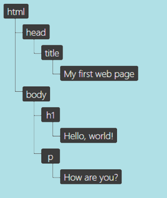

DOM的筆記
html前言：
這個應該算是基本概念，翻譯bitsofco的文章和整合其他資料，我覺得有點難所以整理滿久的QQ
DOM到底是什麼?
Document Object Model文件物件模型－由W3C所定義，是一個網頁的※介面（interface），它的本質是API（Application Programming Interface應用程式介面），藉由將HTML文件內的標籤、文字和圖片定義成物件，讓編譯器可以讀取並操作其內容、架構和樣式(style)， DOM把網頁和程式腳本或程式語言連接了起來。
※介面(interface)人和機械無法直接溝通，需要一個溝通橋樑，微波爐上的按鈕幫助人類和微波爐互動，按鈕就是介面
那網頁是怎麼生成的呢?
瀏覽器將單純的html文檔轉化為複雜、具有樣式(style)和互動性的網頁，這整個過程叫做”關鍵渲染路徑”，這整個過程還滿複雜的，但粗略區分的話可以分成兩個步驟：
- 瀏覽器解析文檔，確定哪些部分會被渲染
- 瀏覽器執行渲染
第一個階段的部分叫做”渲染樹”，代表了會被渲染在頁面上的HTML元素和相關的樣式，而渲染樹的生成則需要兩個要件：
- CSSOM－html元素相關的樣式
- DOM－html元素
如何生成DOM?(還有它長怎樣?)
DOM是物件導向 (object-based) 的HTML原始文件 (sourse html document) 代表，本質上來說它們兩者還是有些不同，DOM為了讓各種瀏覽器可以讀取，把HTML的文檔結構和內容轉換成物件模型 (object model)
DOM的物件模型由所謂的”節點樹 (node tree) ”來表示，之所以叫做”樹”是因為看起來像一根主幹分成大大小小的枝幹一樣，然後大小枝幹可能還會有葉子。以這個例子來說，主幹是根元素＜html＞，分支則是在html下的子元素(也可稱作nested elements，指被包在某個元素內的元素)，而這些枝幹的樹葉則是在元素中的內容（文字之類的）。

以上圖來說，它的節點樹可以這樣表示：
那我們來看什麼東西不是DOM
以上圖來說，DOM看起來跟HTML原始檔案和開發者工具的內容差不多，但這當中還是有差異的，為了要完全理解DOM到底是什麼，我們需要來看看DOM到底不是哪些東西－
DOM不是你的HTML原始文件
雖然DOM是由HTML的文檔創造出來的，但也不完全一樣－
下面有兩個實例來說明DOM和HTML原始碼的差異：
- HTML格式不合格
DOM是符合格式的HTML的介面，在創造DOM的過程中，瀏覽器會修正不合格的HTML程式碼
這個文檔顯然少了＜head＞和＜body＞元素，對於HTML文件來說，這些都是非常必要的元素，那我們再來看看這個文檔生成的DOM樹－

居然已經被更正了！太神喇！
- DOM被Javascript修改的時候
DOM除了可以作為查看HTML文件的介面之外，也可以用Javascript修改，讓其具有可動性。
舉例來說，我們可以用Javascript新增DOM節點－
這樣就會創造出DOM，但當然跟我們HTML的原始文件沒有關係(因為它不會出現在HTML原始檔案中)
DOM不是大家在瀏覽器中看到的東西（就是在說渲染樹）
大家在瀏覽器中看到的都是前面說的渲染樹，是DOM和CSSOM的合體，兩者最大的差異在於－渲染樹只會由最終將出現在螢幕上的內容組成，而DOM則會包含、＜p＞、＜h1＞和被display:none的元素等等…這類的元素。
以上圖為例的話：
渲染樹和視區(viewport)，並不會包含＜p＞元素，因為被藏起來了
而DOM則會包含了＜p＞元素
DOM也不是那些顯示在開發者工具裡面的內容
這個比較難辨，開發者工具在瀏覽器提供了和DOM最相近的值，即便如此，開發者工具仍然包含了許多不是DOM的資料。
最好的例子就是CSS偽元素，用::before和::after選擇器創造出來的偽元素形成一部份的CSSOM和渲染樹，但技術上來說不算是DOM的一部份，因為DOM實際上就是從HTML原始文件中創造出來的，不包含套用在元素上的style樣式。
即使偽元素不是DOM的一部份，它們還是會出現在開發者工具裡面－這也是為什麼偽元素不能被Javascript鎖定，因為它們根本不是DOM的一部份！
回顧
DOM是HTML文檔的介面，瀏覽器用它作為依據，判斷第一步應該要渲染什麼內容在視區上，Javascript可以修改它在網頁上的內容、結構和樣式，雖然和HTML的原始文件相似，但DOM仍然有其不同之處。
- DOM永遠都是格式正確的HTML
- 含有極大的靈活度可以被Javascript編輯和修改
- 不包含偽元素(如::after)
- 可以顯示隱藏的元素（如display: none）